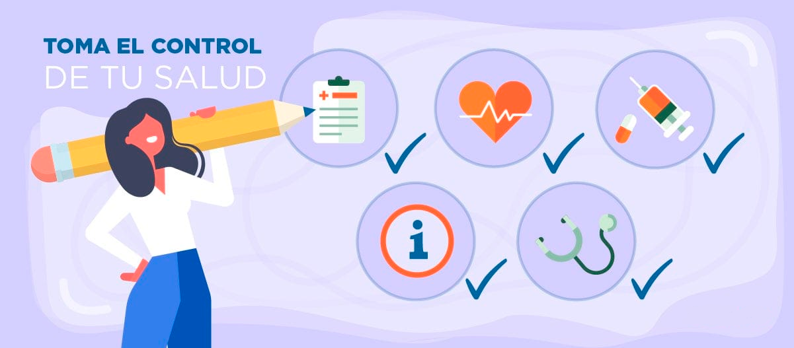

Unidad 1: La definición actual de salud/enfermedad.
¿Qué es la salud?
Según la OMS (Organización Mundial de la Salud), la salud es el estado de completo bienestar físico, mental y social. Este completo bienestar se basa en la idea de que las personas se desarrollan a lo largo de la vida en una interacción compleja entre factores biológicos, sociales y culturales. También es el grado en que una persona o grupo es capaz de llevar a cabo sus aspiraciones, satisfacer sus necesidades y enfrentarse con el medio ambiente.
La salud debe considerarse no como un objetivo, sino como un recurso más de la vida cotidiana.
En cambio, La OPS (Organización Panamericana de Salud) define a la salud como la adaptación diferencial de una persona en su medio.
La salud: Un derecho humano
El artículo 24 de la Declaración de los Derechos Humanos establece que "toda persona tiene derecho a un nivel de vida adecuado que le asegure, así como a su familia, la salud y el bienestar y en especial, la alimentación, la vivienda, el vestido, la asistencia y médica y los servicios sociales necesarios"
Por otro lado, existen diferentes criterios que evalúen el respeto del derecho a la salud en un contexto social, económico y cultural:
- Disponibilidad: Los Estados tienen que tener un número adecuado de establecimientos, centros de salud, bienes y servicios públicos.
- Accesibilidad: Todos los grupos de población, en especial los grupos vulnerables y marginados como las minorías étnicas, mujeres, niños, personas con VIH y personas con discapacidades deben tener acceso a los establecimientos y servicios de salud. Esto se logra evitando la discriminación y respetando etnias, ideologías y posturas políticas. Además, es importante posibilitar la accesibilidad física, económica y facilitando el acceso a la información.
- Aceptabilidad: Todos los establecimientos y centros de salud deben respetar las diferentes culturas y la confidencialidad de los pacientes de acuerdo a la ética profesional. El objetivo principal es mejorar el estado de las personas.
- Calidad: Los establecimientos y servicios de salud deben ser apropiados desde el punto de vista científico, tecnológico y médico. Para esto deben contar con personal médico y parámetros capacitados, además de medicamentos, equipos hospitalarios y científicos adecuados y en buen estado.

Las acciones de salud
Se consideran acciones de salud a todas las medidas que tienden a evitar la manifestación o la propagación de las enfermedades.
Estas acciones están rígidas al individuo, en lo que atañe a la atención médica de las enfermedades o a la acción sobre las causas que puedan provocarlas y al ambiente, en todo lo concerniente al saneamiento o a los factores ambientales que puedan provocar la enfermedad.
Se las suele clasificar en acciones de promoción y prevención primaria, secundaria y terciaria.
- Estados: Deben garantizar la salud de sus poblaciones. Para ello, sancionan leyes y desarrollan políticas en pos de la promoción y prevención de la salud. Además, en cada país existen o deberían existir organismos dedicados a la salud pública como los hospitales públicos, ministerios de salud, etc.
- Organizaciones no gubernamentales: Trabajan en la promoción y prevención de la salud. Muchas veces, lo hacen en distintos países y sobre todo frente a catástrofes naturales o conflictos sociopolíticos.
- Sector privado o empresario: Desarrollan todo tipo de actividades en el campo de la salud: atención, investigación, formación de personal médico, producción de medicamentos, etc. En síntesis, la actividad privada debe ajustarse a las pautas que los Estados imponen a través de las leyes.
Promoción
Es el conjunto de acciones que disminuye los riesgos y la propagación de enfermedades a través de la educación y capacitación. Además, su objetivo es la concientización y la difusión de la forma de prevenir enfermedades y de actuar cuando ellas se producen.
Por otro lado, están dirigidas a los individuos o a las poblaciones sanas y estas medidas tienden a asegurar la igualdad de oportunidades y proporcionar los medios que le permitan a toda la población tener los conocimientos básicos sobre salud y enfermedad.
- Prevención primaria:
Incluye el conjunto de actividades sanitarias que deberían realizar los gobiernos y la comunidad en general para evitar que aparezca una enfermedad en individuos o poblaciones sanas.
La detección de factores y protectores permite tomar medidas con anticipación para evitar el problema.
La prevención primaria comprende la higiene personal, vacunación, etc.
- Prevención secundaria :
Comprenden el desarrollo de programas que permitan un diagnóstico temprano de las enfermedades y la aplicación de un tratamiento adecuado. El diagnóstico temprano incluye los planes epidemiológicos a nivel poblacional para detectar enfermedades y trabajar en la disminución de las tasas de mortalidad a partir de tratamientos aplicados a tiempo.
- Prevención terciaria :
Comprende desde la aparición de la enfermedad y la necesidad de aplicar tratamientos para intentar curarla o paliarla hasta el restablecimiento del completo bienestar de la persona. Esta prevención abarca 3 etapas, las cuales son:
- Recuperación: comienza cuando se manifiesta la enfermedad y se acude a la consulta médica. Un tratamiento adecuado, a veces, puede lograrla recuperación
- Rehabilitación: tiende a restituir en las personas las capacidades físicas, psíquicas o sociales que pudieron haber sido dañadas por una enfermedad o accidente. Tiene que permitir que se desarrollen las habilidades para vivir con autonomía social y económica.
- Reinserción social: es la fase que completa la rehabilitación y necesita de la participación de la comunidad y una actitud que rechace los prejuicios
Calidad de vida
Se define a la calidad de vida como un conjunto de condiciones que caracterizan la manera general de vivir de un individuo o grupos de individuo y que contribuyen con la salud. Además, este concepto hace referencia al bienestar en todos los aspectos, atendiendo a la creación de condiciones para satisfacer sus necesidades (comida y cobijo), psicológicas, sociales y ambientales.
Factores que influyen en la salud:
- Una alimentación equilibrada con las necesidades nutritivas.
- La actividad física, como practicar un deporte, ir al gimnasio o correr mejora la calidad de vida y previene el desarrollo de enfermedades.
- La alternancia de esfuerzo y descanso mejora la condición física y la salud. Dormir entre 7 y 8 horas por día permite que nuestro equilibrio corporal se restablezca.
- La correcta higiene corporal previene muchas enfermedades, más que nada las transmisibles.